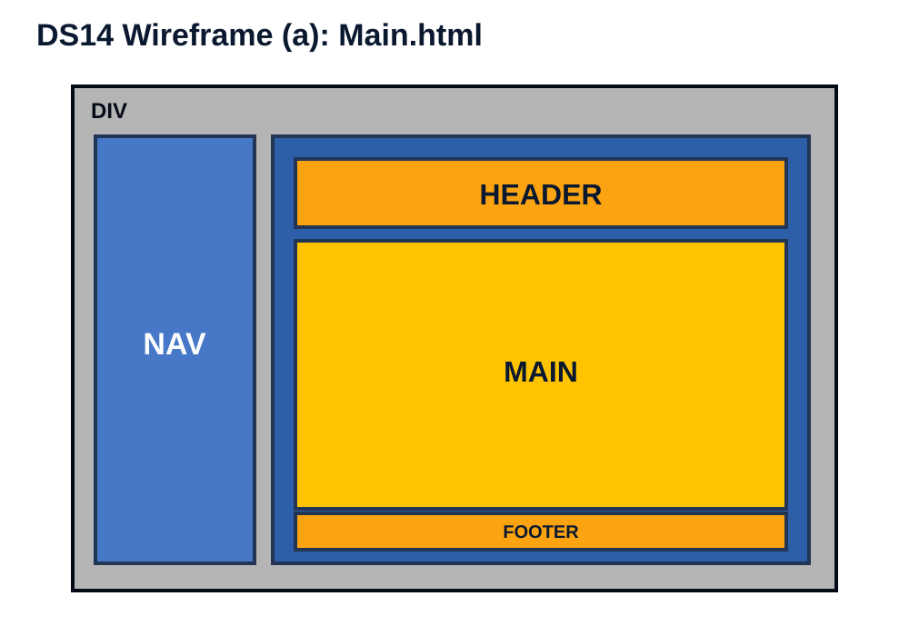
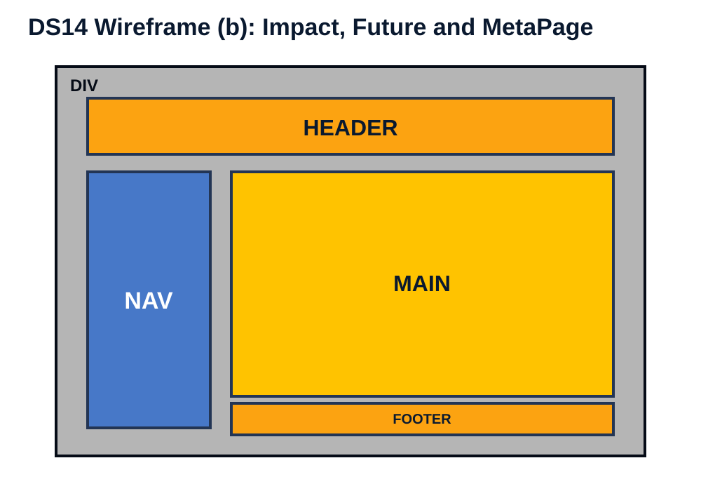
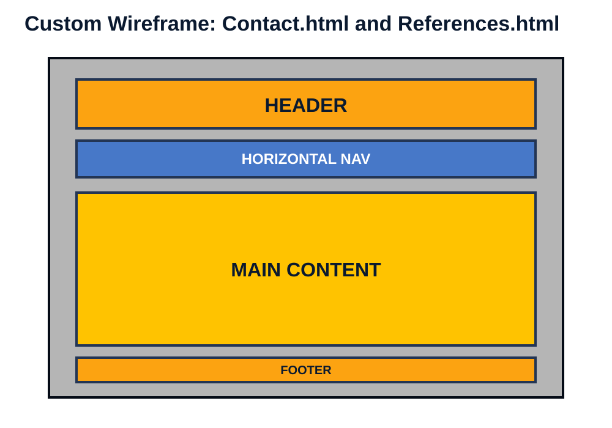

Site map
The website uses a hierarchical structure with a clearly defined main page and navigation links to all major sections.
- Main.html
- Impact.html
- Future.html
- Contact.html
- References.html
- MetaPage.html
DS14 Wireframes
The website follows DS14 carefully. Main.html uses wireframe (a). Impact.html, Future.html and MetaPage.html use wireframe (b). Contact.html and References.html use a custom wireframe, as allowed by DS14.



Design specification cross-reference
| Design specification | Where implemented | Evidence |
|---|---|---|
| DS1 Topic | Main.html and all page headings | Topic selected from approved list: The New Era of Artificial Intelligence. |
| DS2 Pages | Main.html, Contact.html, References.html, MetaPage.html, Impact.html, Future.html | Six pages are included and linked through navigation. |
| DS3 Images | All pages and images folder | Every page has images with alt text and width attributes; borders/alignment are styled in CSS for HTML5 compatibility. |
| DS4 Hyperlinks | References.html, Contact.html and footer | Four or more external links and one email hyperlink are included. |
| DS5 Contact form | Contact.html | Includes text, email, select, textarea and submit button. |
| DS6 Lists | Main.html, Impact.html, Future.html, References.html, MetaPage.html | Unordered, ordered and description lists are used. |
| DS7 Symbols | Main.html footer and symbol strip | Includes UTF-8 symbols such as copyright, registered, trademark, star and arrow. |
| DS8 Writing elements | Main.html, Future.html and Impact.html | Uses line break, blockquote, strong and em phrase elements. |
| DS9 Structural elements | All pages | Uses div, header, nav, main and footer. |
| DS10 CSS styling | styles.css, Main.html, Future.html | External, embedded and inline CSS are included. |
| DS11 CSS properties | styles.css | Uses background-color, color, font-family, font-size, font-style, font-weight, margin, text-align, text-decoration, text-shadow and width. |
| DS12 Colour values | styles.css and inline CSS | CSS colour values are hexadecimal. |
| DS13 Selectors | styles.css | Class selectors such as .content-card and ID selectors such as #home-introduction are included. |
| DS14 Layout | All pages | Main.html follows wireframe (a). Impact.html, Future.html and MetaPage.html follow wireframe (b). Contact and References use custom layouts. |
| DS15 Tables | Impact.html, Future.html, References.html, MetaPage.html | Three or more table types are included with borders, width, alignment, th/td styling, responsiveness, colspan and rowspan. |
| DS16 Validation | MetaPage.html and validation folder | Placeholder images are included. Replace them with real W3C validation screenshots before submission. |
| DS17 Structure | Navigation menu and Word report | The site map is implemented through the nav section and documented in the Word file. |
Validation screenshots
After validation, replace these placeholders with actual screenshots from the official W3C tools.